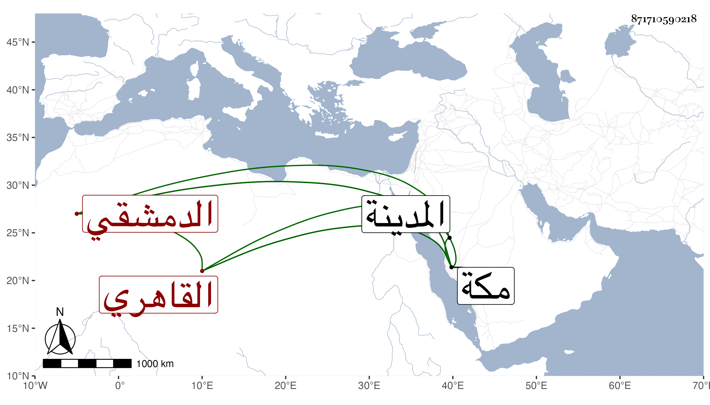

0902Sakhawi.DawLamic.ITO20230111-ara1.EIS1600.871710590218
Biography ID: 871710590218
إبراهيم بن النجم عبد الكريم بن عمر الدمشقي ثم القاهري ابن أخي الخواجا الشمس محمد بن الزين . شاب أقام بمكة ثم بالمدينة مع عمه ووحده وسافر في التجارة وتفحل وابتني بمكة دارا بالقرب من دار عمه ثم سافر في التجارة لكالكوت وغيرها مع سكون ورغبة في الخير واتصال بابنة عمه بورك فيهما ثم عاد بعد موت عمه بقليل فحج في سنة ثمان وتسعين ثم رجع مع الركب لقابل .
